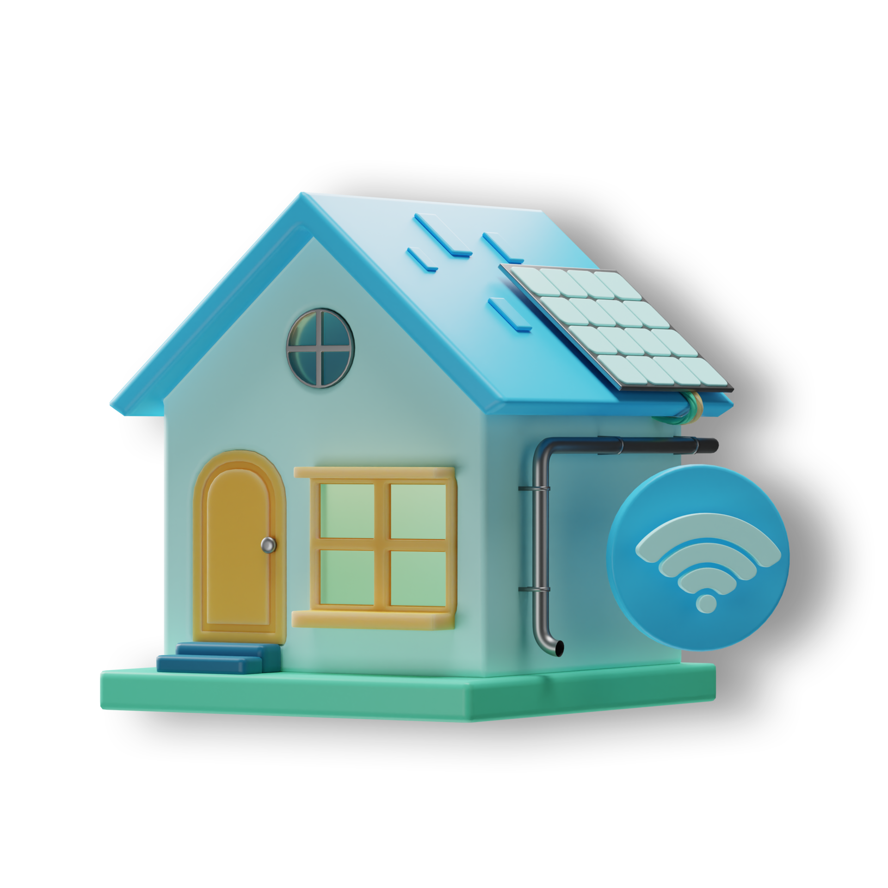

Projeto Casa Automatizada
O projeto de casas automatizadas é uma iniciativa inovadora e socialmente responsável, visando melhorar as condições de vida das pessoas que vivem em comunidades. Essas casas automatizadas poderam oferecer uma série de benefícios e funcionalidades que ajudará a atender às necessidades básicas dos moradores e a promover um ambiente mais seguro, confortável e sustentável.
Cadrastre aqui
SITE UTILIZADO PARA APRESENTAÇÃO
UNIVERSITÁRIA QUALQUER CONTEÚDO DA PÁGINA DEVE SER DESCONSIDERADO.
